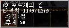

|
2002年5月1日
美國伺服器討論版 - 官方人員解答進階問題
第四部分 補完
鳴謝Foster翻譯以下問題 ^^
問:
人物正義值的不同，對於魔法的影響有沒有分別的指標？(即如
正義值5k=中治醫xx點, 正義值10k=中治醫...如此類推)
答:
由於計算上以及治癒系列的魔法並不能醫治分數的傷害，又或者能醫治32767點那麼多的傷害，如要根據正義值而對治癒系列的魔法效果作出不同的指標，便要將正常能醫治的點數作出不同層次的區分。試想像如一個治癒魔法正常能醫治32點的傷害，要按32000種正義值的可能性去區分代表著差不多每1000點便要分一層了。
美國伺服器討論版 - 官方人員解答進階問題
第五部分
原文﹕ http://boards.lineage-us.com/cgi-bin/showflat.pl?Cat=&Board=Discussions&
Number=150448&page=0&view=collapsed&sb=5&o=7&part=all
中文翻譯﹕ HKLineage.com
香港天堂非官方網站
(轉載時請勿移除以上三行)
以下內容翻譯自美國Lineage討論區﹐歡迎各界人任轉載﹐但請注明是翻譯自HKLineage.com的
^^
重點﹕組隊打怪王族在陣有更多經驗加成﹐衝防衝武的實際機率﹐祝福武器對不死系及惡魔有加成。
問﹕請問組隊打怪的經驗值加成如何﹖一定要有王子在隊中﹖另外你們會否建立一個隊伍分配道具系統﹖
答﹕假如隊伍中沒有王族的話﹐經驗值加成是很少的。經驗值加成取決於隊伍的人數﹐但如果沒有王族會比有王族在隊差很遠。王族在隊的話會有5%的經驗值加成﹐因此一隻怪物假如原先會給100經驗值的話﹐在加成後會有105經驗值。經驗值是根據等級的比例而分配給每一位隊伍成員。
問﹕我們會否得現在經常討論皫傷害點數與攻擊命中的額作加成﹖正如敏捷/防禦力的加成中﹐你們是否測試中﹖
答﹕除了敏捷/防禦力的加成外﹐我們仍然討論其他的改變。部分的敏捷/防禦力改變已經完成﹐其他的我們仍然努力中。這些在韓國已經更新的改變我們正在檢討和最佳化中。
問﹕請問用防卷在過了安定值的防具(骨系﹐精系及非精系)上的成功機會率為多少﹖同時祝防+1﹐+2﹐+3的機會為多少﹖
答﹕
在非骨系且過了安定值的防具上使用防卷的成功機會為(1
/ 現在的加值)﹐例如+4衝+5的機會為25% (1/4)﹐+6衝+7的機會為16.6%
(1/6)。
而武器的則為固定的33.3% (1/3)﹐武器可以安全地+6。假如在+5時使用祝武﹐一定是安全的且有機會得到+7。假如+4時使用祝武﹐一定是安全的﹐且亦有可能直接得到+7的。這可能會比使用普通武卷更為花算。
有一點是非常重要的﹐當道具已經到達了或過了安定值(+6是最大安定值)﹐祝卷是不會+2或+3的。(HKLineage.com按﹕根據前文﹐美國官方人員所指的道具應該是指武器﹐非精靈防具在+5使用祝防時也會+2的)
假如道具已經到了+9或以上﹐即使成功的話亦有一半機會+0及一半機會+1。所以在+9或以上武器會有1/3機會成功不會爆﹐然後就有一半機會+0﹐一半機會+1。(HKLineage.com按﹕簡單來說在+9武器上用武卷會有66.7%
(2/3)機會爆﹐16.7%(1/6)機會+0和16.7%(1/6)機會+1)
簡單來說﹐+0的機會只會出現在+9或以後的武器上。你要先過了1/3這關﹐再過1/2這關才能得到+10的武器。
使用祝卷最重要的事項是使用時間﹐玩家要先判斷是否有效及經濟。在最佳的時用才會有最好的效果。
(HKLineage.com﹕以上資料和本網4月20日的報導吻合﹐而且衝防的機率其實網主早就在香港伺服器公頻上提過
:P﹐我好像有說過衝+4是25%﹐+5是20%和+6是16.6%吧 ^^﹐另外就本人四年多來縱橫中港台韓日美Lineage伺服器來看﹐所有伺服器有關衝防衝武的機率都是一樣的)
問﹕請問每種武器的攻擊指數為多少﹖
答﹕基本上每種武器都可以製造一定的傷害值﹐傷害值是介乎該武器的攻擊上限興下限之間﹐同時亦受其他因素影響﹐如對方的技能與防禦力。我們不會列出武器的實際攻擊指數﹐不過一些玩家網站都有幾準確的計算方面。
問﹕Mel我真的想知道祝福的武器與防具有何用﹖有人說它們比較難跌﹐有人說它們對不死系有好處。我已經對食屍鬼測試過﹐我用+7祝武刀和+6銀長劍但我發覺銀長劍好像殺得較快。到目前為此我看不到祝福的防具有甚麼不同。
答﹕祝福的武器會不死系及惡魔有額外傷害﹐包括巴風特﹐但其額外傷害是非常少的。祝福武器打食屍鬼會比銀系好﹐因為食屍鬼雖然是不死系﹐但它亦不怕銀系(它是唯一不死系怪物而又不怕銀系)。祝福防具對不死系是沒有作用的。
(HKLineage.com按﹕和本網早前報導祝福的真相完全吻全)
Melantus
Community Coordinator - Lineage
NCInteractive - Austin
波曲王之劍的資料

原文﹕ Lineage
Compendium
中文翻譯﹕ HKLineage.com
香港天堂非官方網站
你可能對於昨天Poseidon在格鬥場上的圖片感到非常有趣﹐這是否一些特別的活動呢﹖無錯﹐在韓國的Gunter伺服器上舉行了"最後之戰"的活動﹐各血盟要在格鬥場內互相戰爭﹐最後能夠站在格鬥場上的一盟為勝利者﹗
而該活動的獎金有2000K及一把極之珍貴的波曲王之劍(Sword
of Lord Porche)﹐波曲王之劍是在很久之前韓國伺服器活動的獎品﹐這把劍的名稱就是來自那活動的勝利者﹗
波曲王之劍的特徵﹕11/12﹐全職﹐鐵製﹐單手﹐重50﹐可以安全地+9。
Lineage(天堂)新手攻略(簡體字版)
中國大陸Lineage官方網站更新了新手幫助手冊﹐大家可以在以下連結下載﹕
http://www.lineagechina.com/download/Lineage
QSG_online.pdf
比較有趣的是... 封面竟然加入了<<天堂>>的名字﹐另外中國大陸伺服器是位於韓國的。
美國正式伺服器更新項目
原文﹕ 美國Lineage官方網站﹕http://www.lineage-us.com/news/item156.html
中文翻譯﹕ HKLineage.com
香港天堂非官方網站 (暫時請用Lineage3D.com登入網站)
美國正式伺服器在4月30日更新了以下項目：
1.
法師套裝的錯誤解決了，當玩家穿著這套裝，在重新登入時將不會損失MP。
2.
怪物在復活後將不會保留之前的加速效能，除非在復活後被再次加速。
3.
修正了怪物沒有被打中但又顯示命中動畫的錯誤。
4. 修正了狗隻的稱名會變回原來名稱的錯誤。
5. 修正了對武器，防具施法與為玩家變身的NPC的收費錯誤。
6. 怪物屍體現在會在45-60秒後消失，而狗隻的則為5分鐘。
7. 商人Buakheu將會售賣伊娃的祝福，價格為330金幣。
8. 更新了角色升等級時的動畫。
9. 精靈餅乾現在不需要魔法寶石來製作。
10. 移除了控制狗隻中的警界功能。
11. 瑟魯基之劍（日本劍）改為單手。
12.
新增了新的道具，我們希望玩家能夠自行發現有關道具。
13.
重新平衡了首領級怪物，包括掉下的道具，實力及出現時間。改變了的怪物有：巴風特，巴列斯，魔術師，巨蟻女皇，死亡騎士及不死鳥。
14. 重開了格鬥場租借系統。 |